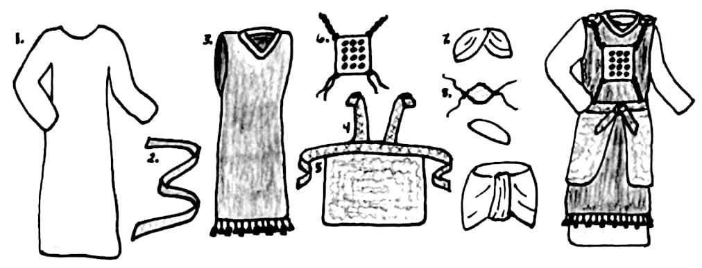

Arão e seus filhos se envolvem de forma integral com cada aspecto da adoração no tabernáculo.Aaron and his sons become integrally involved with every aspect of tabernacle worship.
As vestes do sumo sacerdote funcionam como um tabernáculo de dentro para fora.The high priest's garments function as an inside-out tabernacle.
Os móveis especiais, as vestes e todos os rituais envolvidos na vida do tabernáculo funcionam juntos para contar a história de Deus se mudando para a vizinhança.The special furniture, garments, and all of the rituals involved with tabernacle life work together to tell the story of God moving into the neighborhood.
Função das Vestes SacerdotaisFunction of the Priestly Garments
Vestes Sacerdotais. Desenho de Carmen Imes. Imes, Carmen Joy (2018). Bearing YHWH's Name at Sinai. Eisenbrauns. 125.Priestly Garments. Drawing by Carmen Imes. Imes, Carmen Joy (2018). Bearing YHWH's Name at Sinai. Eisenbrauns. 125.
As vestes sacerdotais incluem uma túnica (1), o cinto (2), o manto (3), o éfode (4), a faixa (5), o peitoral (6), a tiara (7) e a medalha (8).The priestly garments include a tunic (1), sash (2), robe (3), ephod (4), band (5), breastplate (6), turban (7), and medallion (8).
Arão e seus filhos fazem parte do aparato cultual.Aaron and his sons are part of the cultic apparatus.
As vestes são essenciais (constitutivas) do seu papel (Êx 28:35).The garments are essential to (constitutive of) their role (Exod. 28:35).
As vestes implicam privilégio e responsabilidade sagrados.The garments imply sacred privilege and responsibility.
Somente Arão usa tecidos coloridos (exceto pelo cinto dos sacerdotes).Aaron alone wears colored fabrics (except for the priests' sash).
Arão é um "tabernáculo de dentro para fora", com suas vestes mais elaboradas visíveis [ver Propp, William (2006). Exodus 19-40. 538.].Aaron is an "inside-out tabernacle" with his most elaborate garments visible [see Propp, William (2006). Exodus 19-40. 538.].
Arão torna-se o representante autorizado de YHWH e de todas as 12 tribos, mediando entre eles (Êx 28:12, 29).Aaron becomes the authorized representative of YHWH and of all 12 tribes, who mediates between them (Exod. 28:12, 29).
Urim e Tumim facilitam e centralizam a tomada de decisões divinas (Êx 28:30).Urim and Thummim facilitate and centralize divine decision making (Exod. 28:30).
Arão levou sobre si o pecado relacionado ao santuário como representante autorizado (Êx 28:38).Aaron bore sanctuary-related sin as the authorized representative (Exod. 28:38).
Simbolismo da Cerimônia de OrdenaçãoSymbolism of the Ordination Ceremony
A cerimônia de ordenação envolve as três marcas definidoras de um rito de passagem: separação, liminaridade e reintegração.The ordination ceremony involves all three of the defining marks of a rite of passage: separation, liminality, and reintegration.
Moisés é o agente principal (Arão e seus filhos são bastante passivos).Moses is the primary actor (Aaron and sons are quite passive).
O sangue é um símbolo essencial de purificação.Blood is an essential symbol of cleansing.
Os sacerdotes devem primeiro ser purificados antes de poderem facilitar a purificação dos outros.Priests must first be cleansed before they can facilitate the cleansing of others.
Os sacrifícios restauram a santidade da comunidade.Sacrifices restore the holiness of the community.
A bênção inicia a vocação da comunidade como representantes de YHWH.Blessing initiates the community's vocation as YHWH's representatives.
Pergunta de ReflexãoReflection Question

The special furniture, garments, and all of the rituals involved with tabernacle life work together to tell
Como você descreveria o papel do sumo sacerdote? De que forma as vestes sacerdotais são cruciais para esse papel?How would you describe the role of the high priest? How are the priestly garments crucial to this role?